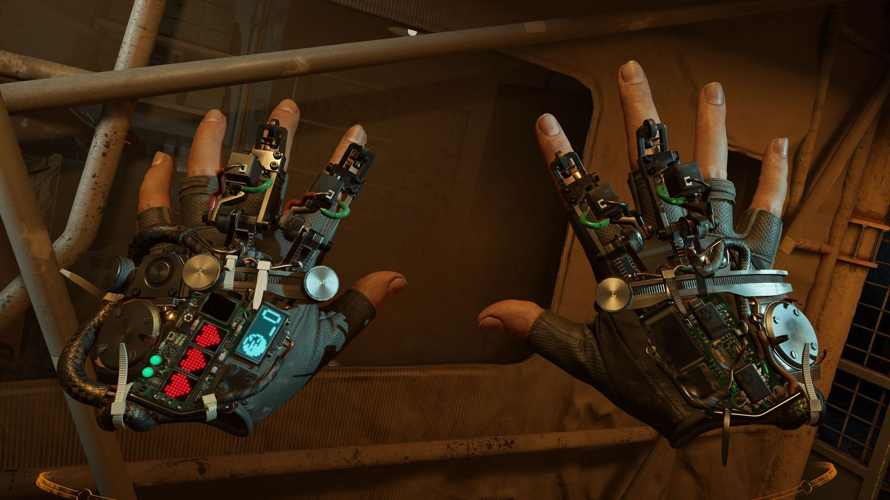

4D Mikroskoptan Alınan İnanılmaz Görüntüler, Moleküler Yapıları Sanata Dönüştürüyor
Günümüzde birçok mikroskop bulunuyor. Oldukça gelişmiş teknolojiler ile çalışan araştırmacılar yine de molekülleri istenilen netlikte göremeyebiliyor.devamını gör...

Google Stadia uygulaması Play Store’da yayınlandı
Google'ın bulut üzerinden AAA oyunları oynamaya imkan sağlayacak abonelik hizmeti Stadia, 19 Kasım'da resmen kullanıma açılacak. Hizmetin Android uygulaması ise bugün kullanıcılara sunuldu.devamını gör...

Sony ilginç PlayStation 5 patenti ile gündemde
Sony, 2020 yılında çıkacak olan yeni PlayStation 5 modeli için hazırlıklarına devam ediyor. İddialara göre şirket, Brezilya Patent Enstitüsü’ne (INPI) gelecek yıl çıkaracağı PS5 modeli için başvuruda bulundu. PS5 patenti tüm dikkatleri üzerine çekmeyi başardı.devamını gör...
Half-Life: Alyx sistem gereksinimleri, ekran görüntüleri ve ilk fragman karşınızda
Oyun dünyasında bir efsane haline gelen Half-Life serisi ikinci oyunun ardından büyük bir sessizliğe bürünmüştü. Herkes üçüncü oyunu beklerken Valve sanal gerçeklik tabanlı bir yapımla sürpriz yaptı. Half-Life: Alyx sanal gerçeklik oyunları alanında bir devrim yapabilir.Half-Life: Alyx neler sunuyor?
Half-Life: Alyx oyunu oyuncuyu doğrudan atmosferin içerisine atıyor. Oyunun kahramanı Alyx’in yerine geçtiğiniz yapımda yer çekimi eldivenlerini kullanarak hikâyeyi şekillendirmeye çalışıyorsunuz.Half-Life: Alyx oyunu ilk ve ikinci Half-Life oyunlarının arasında geçiyor. Alyx ve babası bu yeni oyunda Combine uzaylı istilasına karşı bir direniş hazırlama sürecini yaşayacak. Tamamen yeni bir senaryo olduğu ifade edilen oyun Half-Life 2 kadar oynanış süresine sahip. Oyuna başlamadan önce Half-Life 2: Episode 2 paketinin mutlaka bitirilmesi tavsiye ediliyor.

Half-Life: Alyx sadece sanal gerçeklik odaklı bir oyun. Uzun bir süre bilgisayar veya konsollara gelmeyecek gibi görünüyor. Konseptin yapısı gereği daha yoğun oyun tecrübesi ve yüksek adrenalin sunuluyor. Oyuncular eşyalar arasında gezinmeyi, nişan almayı, araçları yönlendirmeyi ve uzaylı ara yüzlerine sızmayı öğrenecekler.
Yeni oyun to Valve Index, Oculus Rift, Link kablosu ile Oculus Quest ve HTC Vive gibi başlıklarla uyumlu. Ayrıca Windows karma gerçeklik gözlükleri ile de oynanabiliyor. Sistem gereksinimleri ise en az Core i5-7500 veya Ryzen 5 1600 işlemci, GTX 1060 veya RX 580 ekran kartı, 12GB RAM olarak belirlenmiş.
Source 2 oyun motoru üzerinde şekillenen Half-Life: Alyx ayrıca güncellenen Hammer seviye düzenleme aracı sayesinde oyuncuların kendi seviyelerini inşa etmesine de izin verecek. Valve Index kaskına sahip olanlar veya yıl sonuna kadar satın alanlar özel oyun içi kozmetik hediyelere sahip olacaklar.
Half-Life: Alyx ön siparişe başlamış durumda. Valve Index sahipleri 54$ karşılığında ön sipariş verebiliyor. Normal fiyatı 60$ seviyesinde Türkiye fiyatı ise sadece 82,80 TL. Oyunun çıkış tarihi ise Mart 2020 olarak açıklandı.
Hakkımızda
Güncel olmayan teknoloji haberleri sunan amatör bir web sitesi.